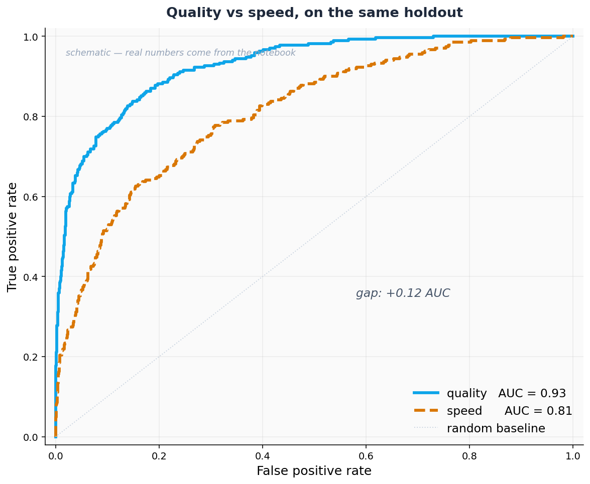

Probabilities
and persistence.
Agenda
From labels to scores
Tune the cutoff you ship
Three things you'll leave with
Reload a trained model by ID
Call load_model(MODEL_ID) on a fresh estimator and predict immediately — no retraining, no data upload, any session, any machine.
Score borrowers, then tune the threshold
Use predict_proba() for probabilities, rank a holdout set by default risk, and sweep the cutoff until precision and recall match your business cost.
Choose quality or speed — with evidence
Train both modes on the same data, overlay the ROC curves, and defend your pick with AUC — not folklore.
From labels,
to scores.
A probability is a ranking signal, a threshold knob, and a confidence you can defend — all in one number.
A trained model is a string
When fit() returns, NEXUS hands you a trained_model_id_. That string is the whole model. The weights live in Fundamental's registry; you carry the id.
Reload it in any session. Call load_model(id) on a fresh estimator and predict() — no data upload, no retraining, no file transfer. The model your teammate trained Tuesday is your model today.
Two lines,
and last week's model
is back
Paste the id, call load_model(id), and predict. The session you left three days ago picks up exactly where it stopped.
no upload, any session.
Two borrowers. Same label. Different risk.
Quietly risky.
Just below the conventional 0.5 cutoff. A nudge in features, a retraining, a different seed — any of those flips the label. The risk is right there in the 0.48 that the label hides.
Genuinely safe.
Deep in the safe zone. A retraining or seed change will not push this one past 0.5. The label and the score agree.
predict_proba() preserves the order that predict() erased.
predict_proba() reads confidence.
# reload the Module 01 model — two lines nexus_quality = NEXUSClassifier() nexus_quality.load_model(MODEL_ID) # scores, not labels probas = nexus_quality.predict_proba(X_holdout) # → shape (n_rows, 2) # col 0 = P(no default) # col 1 = P(default) ← use this one default_prob = probas[:, 1] print(f"range: [{default_prob.min():.4f}, {default_prob.max():.4f}]")
0.78 is not just a 1.
A label erases ordering. A score preserves it. 0.78 is riskier than 0.51 — which is riskier than 0.12. That order is the queue real credit teams operate. Rank first. Decide second.
0.5 is a math convention.
Your threshold is a business call.
Sweep it. Pick yours.
from sklearn.metrics import precision_score, recall_score, f1_score thresholds = np.arange(0.05, 0.66, 0.05) rows = [] for t in thresholds: preds_t = (default_prob >= t).astype(int) rows.append({ "threshold": round(t, 2), "precision": precision_score(y_holdout, preds_t, zero_division=0), "recall": recall_score(y_holdout, preds_t, zero_division=0), "f1": f1_score(y_holdout, preds_t), }) sweep = pd.DataFrame(rows) print(sweep.to_string(index=False)) # → the threshold that maximizes F1 is rarely the one you ship
A missed default costs more than a false alarm.
F1 treats precision and recall as equal weights. Credit risk does not. If a loan loss costs ten times a declined good borrower, let that asymmetry pick the number — not the math.
Typical shape: at threshold 0.15 recall is high (~0.85) and precision is low (~0.31); at 0.35 they cross near F1's peak (~0.54); at 0.55 precision climbs (~0.79) as recall collapses. The threshold that ships is rarely the F1 peak.
Speed explores. Quality ships.
NEXUS ships two training modes behind one interface. Speed is the right choice during feature engineering, iteration, and anything you will throw away.
Quality is the full quality pass. It is what you train before you call anything production-ready. Compare them on overlaid ROC curves. The AUC gap tells you whether the extra time is worth it.
One interface,
two training
budgets
Same fit(X, y). Same predict_proba(). The only difference is the mode flag — and the wait you pay for better separation. Ship speed when the gap is small; pay for quality when it is not.
same API surface either way.
Quality vs speed — on the same holdout.

Closer to the
top-left is
better separation
Both curves sit above the diagonal — both models do better than chance. Quality sits above speed across the whole range, which is what the AUC gap summarizes in one number.
When the gap is small, ship speed and move on. When it is the size you see here, the extra training time is cheap insurance.
from your notebook run.
Pick your
threshold.
Defend it.
You have a quality model and a holdout set.
Pick the threshold you would ship — and say why.
Run the sweep cell. Read precision, recall, and F1 across thresholds from 0.05 to 0.65.
Pick a threshold based on a business premise: a missed default costs ten times a declined good borrower.
Train a speed model on the same training data. Score the holdout. Overlay both ROC curves.
In one sentence: which model, which threshold, why. Paste your answer in the notebook's Your call cell.
Three takeaways
load_model(id) makes training a one-time cost
The id is the model. Reload it in any session, on any machine, in two lines — no retraining, no file transfers.
Scores replace yes/no — and unlock your threshold
predict_proba() returns ranking signal. The cutoff that separates approve from decline is a business decision, not 0.5.
Speed to explore. Quality to ship.
Two modes, one interface. The ROC overlay shows the AUC gap — that is what tells you whether the extra training time is worth it.